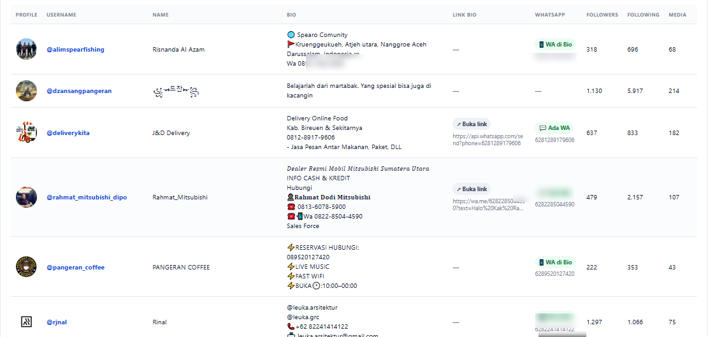

01
◎
Tentukan target
Produk, niche, lokasi, keyword, jenis bisnis, atau kriteria calon pelanggan.
Kami membantu bisnis menemukan akun Instagram yang sesuai dengan target market Anda, mengkurasi prospek, dan menyusun data calon pelanggan agar tim sales Anda bisa langsung melakukan pendekatan.
Contoh tampilan database hasil pencarian Instagram, lengkap dengan informasi akun dan kontak WhatsApp yang tersedia secara publik.

Contoh tampilan sistem internal. Data pada gambar digunakan sebagai ilustrasi.
Mencari prospek di Instagram terlihat mudah, sampai harus dilakukan ratusan kali.
Search akun satu per satu
Cek apakah bisnisnya sesuai
Cari informasi kontak
Salin dan rapikan data
Anda memberi tahu siapa yang ingin dicari. Kami membantu proses pencarian sampai datanya siap digunakan.
Produk, niche, lokasi, keyword, jenis bisnis, atau kriteria calon pelanggan.
Kami menemukan akun yang relevan berdasarkan kriteria campaign Anda.
Prospek dipilah agar lebih sesuai dengan target market yang Anda inginkan.
Data disusun agar mudah digunakan untuk prospecting dan follow-up.
Format dapat disesuaikan dengan kebutuhan tim sales Anda.
Harga dapat disesuaikan berdasarkan jumlah prospek, target, dan tingkat kurasi.
Untuk mencoba satu target market.
Butuh lebih dari 1.000 username, target berbeda, atau kebutuhan prospecting khusus?
Contoh format testimoni pelanggan yang bisa diganti dengan testimoni asli setelah layanan mulai digunakan.
“Kami jadi lebih mudah mendapatkan daftar akun Instagram yang sesuai dengan target market. Tim sales tidak perlu lagi menghabiskan banyak waktu untuk mencari prospek secara manual.”
“Target yang kami berikan cukup spesifik, dan hasil prospeknya lebih terarah. Data tersebut sangat membantu untuk aktivitas outbound marketing kami.”
“Daripada mencari akun satu per satu, kami cukup memberikan kriteria calon pelanggan. Hasilnya bisa langsung kami gunakan sebagai bahan prospecting oleh tim sales.”
Tidak. Anda dapat menjelaskan produk atau jasa Anda, lalu kami membantu menyusun kriteria calon pelanggan.
Bisa. Misalnya restaurant di Banda Aceh, hotel di Aceh, atau agen property di kota tertentu.
Tidak. Kontak hanya dicantumkan jika tersedia secara publik. Ketersediaan data bergantung pada profil dan sumber yang ditemukan.
Ya. Data disusun untuk membantu aktivitas prospecting, follow-up, dan outbound sales.
Kirim produk/jasa Anda, lokasi target, jenis bisnis, dan jumlah prospek yang dibutuhkan. Kami bantu mulai dari sana.